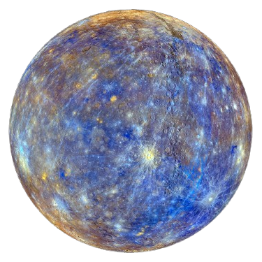
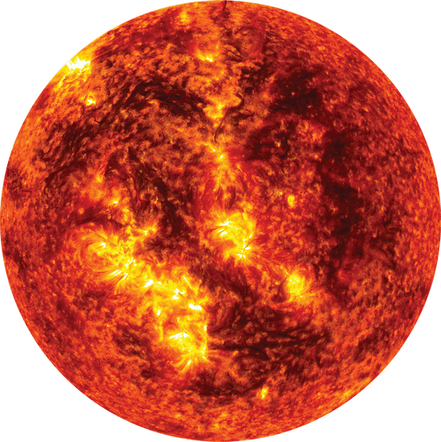

Mercurio è il pianeta più vicino al Sole e il più piccolo dell'intero Sistema Solare. Per migliaia di anni è stato osservato dagli astronomi come un piccolo punto luminoso che compare solo per pochi istanti all'alba o al tramonto, nascosto dall'intensa luce della nostra stella.
Nonostante le sue dimensioni ridotte, Mercurio è un mondo sorprendente. La sua superficie è ricoperta da antichi crateri, enormi scogliere e vaste pianure laviche che raccontano una storia iniziata oltre 4,5 miliardi di anni fa, quando il Sistema Solare era ancora giovane.
A prima vista potrebbe sembrare un pianeta morto e immutabile, ma le missioni spaziali hanno rivelato un corpo celeste molto più complesso: possiede un enorme nucleo metallico, un campo magnetico e perfino depositi di ghiaccio d'acqua nascosti nei crateri perennemente in ombra vicino ai poli.
Mercurio rappresenta un vero laboratorio naturale per comprendere come si formano ed evolvono i pianeti rocciosi.
